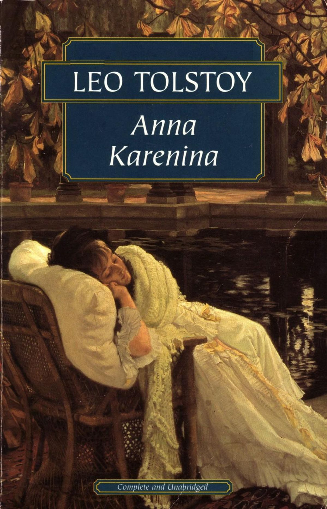
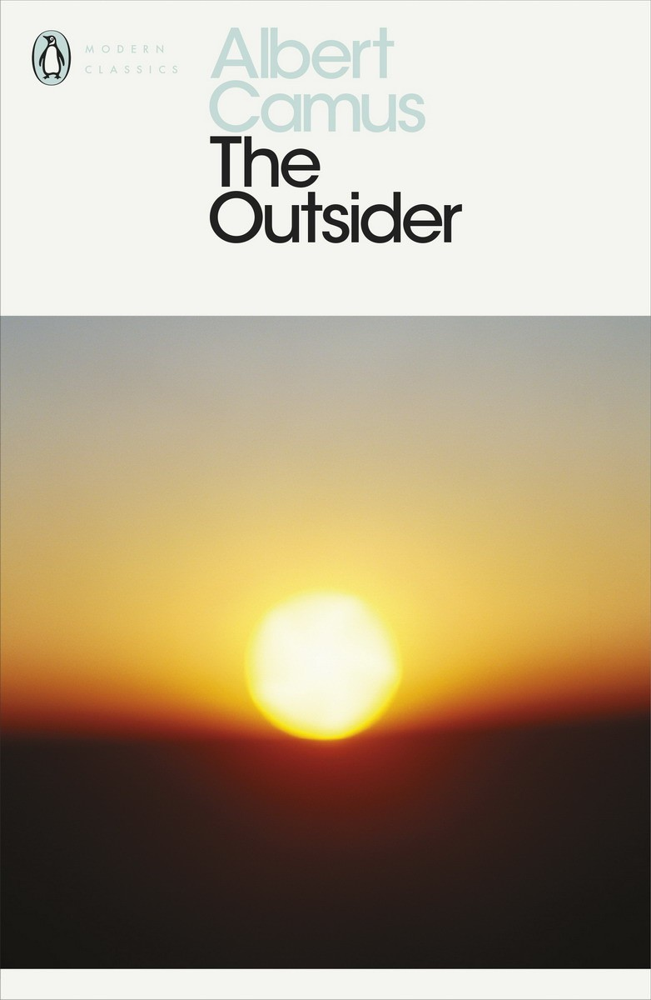
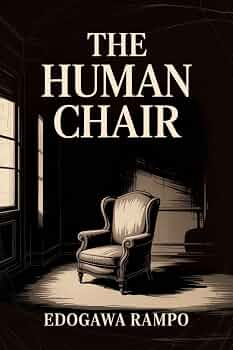
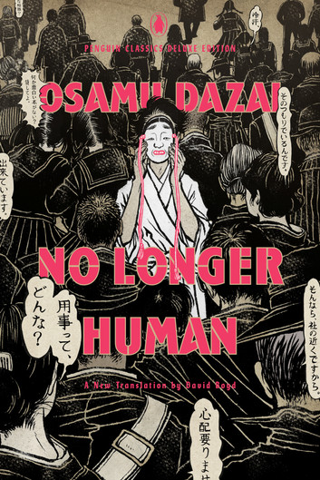

Literary Collection
Explore our collection of favorite books, from classic literature to mystery and psychological fiction.
Murder on the Orient Express
Agatha Christie
A classic mystery about a murder aboard the famous Orient Express, investigated by Hercule Poirot.

Anna Karenina
Leo Tolstoy
A classic novel about love, family, society, and the consequences of difficult personal choices.

The Outsider
Albert Camus
A philosophical novel exploring alienation, morality, and the absurd through the life of Meursault.
First Principle
Thomas E. Ricks
A nonfiction work exploring leadership, military history, and the principles behind successful strategy.

The Human Chair
Edogawa Ranpo
A mysterious and unsettling story about obsession, identity, and a disturbing secret hidden inside a chair.

No Longer Human
Osamu Dazai
A dark psychological novel about loneliness, alienation, and a man's struggle to connect with society.